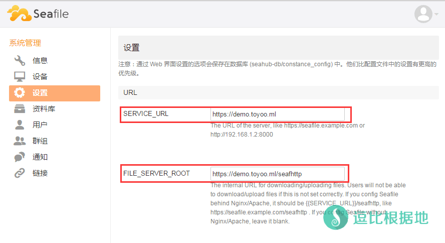

前段时间，各个网盘纷纷下线，导致目前能用的大网盘，也就几个，还都限速...
然后很早的时候就有人想让我写个 自建私有云盘（网盘）的教程了，我以前用过 owncloud，但是这个玩意，安装后进去一看，一堆报错的，看着就头大，然后网上查了查，也有人安利，最终我选择了 Seafile，我对这类程序也不了解，就先写个Seafile教程好了。
Seafile 简介
Seafile 是一个开源的文件云存储平台，解决文件集中存储、同步、多平台访问的问题，注重安全和性能。
Seafile 通过“资料库”来分类管理文件，每个资料库可单独同步，用户可加密资料库， 且密码不会保存在服务器端，所以即使是服务器管理员也无权访问你的文件。
Seafile 允许用户创建“群组”，在群组内共享和同步文件，方便了团队协同工作。
Seafile 官方网站：https://www.seafile.com/
Github 开源项目地址：https://github.com/haiwen/seafile
各平台同步客户端下载：https://www.seafile.com/download/
其他私人网盘教程：https://doub.io/all-one/#私有网盘 相关教程
搭建环境
本人测试和教程所用环境为 Debian 7 x64 （我写教程除非不支持这个系统否则我都会用这个系统做教程测试的）
一个刚重装，纯净的 VPS。
本教程示例域名为： demo.toyoo.pw
本教程安装目录为： /root/seafile/...
域名和安装目录，请自行替换为自己的配置。
部署Seafile
安装依赖
wget -N --no-check-certificate -P /etc/apt https://raw.githubusercontent.com/ToyoDAdoubiBackup/doubi/master/sources/us.sources.list && rm -rf /etc/apt/sources.list && cp /etc/apt/*.sources.list /etc/apt/sources.list
为了避免安装依赖时，因为源的问题缺少安装组件，所以请使用最新的Debian 稳定源（jessie）！
上面代码默认是 美国的镜像源，更多的请在这里查看，选择最佳的镜像源文件，替换上面的 us.sources.list 文件名即可。
Seafile依赖于Python，所以你的VPS中的 Python版本要高于 2.7 。
apt-get update
apt-get install mariadb-server -y
apt-get install python2.7 python-setuptools python-imaging python-ldap python-mysqldb python-memcache python-urllib3 vim -y
第二行代码是安装MariaDB的，安装期间，会提示你输入要设置的 数据库ROOT账号的密码 。注意，输入的时候是看不到输入内容的，盲输！
提示可能是这样的：
While not mandatory, it is highly recommended that you set a password for the MariaDB administrative "root" user.
If this field is left blank, the password will not be changed.
New password for the MariaDB "root" user:
Repeat password for the MariaDB "root" user:
第三行就是让你输入 ROOT的密码，第四行是让你重复输入一遍刚才设置的 ROOT密码。
下载解压
假设你当前是在 /root 文件夹内执行以下命令，后面的所有seafile目录都是在 /root 文件夹内的。
mkdir seafile && cd seafile
创建一个 seafile 文件夹并进入文件夹，以后你的 seafile相关文件都在 /root/seafile 文件夹中了。
uname -m
#查看自己的VPS 系统位数，如果返回 X86_X64 那么就使用第一行代码，如果是 i386 那就使用第二行代码。
wget "http://seafile-downloads.oss-cn-shanghai.aliyuncs.com/seafile-server_6.0.7_x86-64.tar.gz"
wget "http://seafile-downloads.oss-cn-shanghai.aliyuncs.com/seafile-server_6.0.7_i386.tar.gz"
此处的下载链接版本可能不是最新的，最新版本请查看这里。
tar -xzf seafile-server_*.tar.gz
mkdir installed && mv seafile-server_*.tar.gz installed
# 解压下载的压缩包文件，并把压缩包文件移到新建的 installed 文件夹。
开始安装
cd seafile-server-* && chmod +x *.sh
./setup-seafile-mysql.sh
# 运行安装脚本并回答问题
根据下面的中文注释填写。
点击展开 查看详细注释内容
[email protected]:~/seafile/seafile-server-6.0.7# ./setup-seafile-mysql.sh
Checking python on this machine ...
Checking python module: setuptools ... Done.
Checking python module: python-imaging ... Done.
Checking python module: python-mysqldb ... Done.
-----------------------------------------------------------------
This script will guide you to setup your seafile server using MySQL.
Make sure you have read seafile server manual at
https://github.com/haiwen/seafile/wiki
Press ENTER to continue
# 一开始会检查依赖是否安装完整，如果不完整会提示你缺少什么，如果完整就会让你 按回车键 继续。
-----------------------------------------------------------------
What is the name of the server? It will be displayed on the client.
3 - 15 letters or digits
[ server name ] DOUBI
# 输入你的服务名字，不过没什么卵用，据说已经废弃了这个选项。
What is the ip or domain of the server?
For example: www.mycompany.com, 192.168.1.101
[ This server ip or domain ] demo.toyoo.pw
# 输入你的域名或者IP，如果你有域名，那么就输入域名，IP请输入VPS的公网IP
Where do you want to put your seafile data?
Please use a volume with enough free space
[ default "/root/seafile/seafile-data" ]
# 输入你要设置的数据储存文件夹，默认回车即可
Which port do you want to use for the seafile fileserver?
[ default "8082" ]
# 输入你的 文件同步端口，这个直接回车，不要改！
-------------------------------------------------------
Please choose a way to initialize seafile databases:
-------------------------------------------------------
[1] Create new ccnet/seafile/seahub databases
[2] Use existing ccnet/seafile/seahub databases
[ 1 or 2 ] 1
# 选项1指的是，Seafile自动给你创建数据库。
# 选项2指的是，你自己已经创建好了数据库。
# 这里选择 1 ，回车后就会提示你输入要创建的数据库信息了。
What is the host of mysql server?
[ default "localhost" ]
# 问你Mysql服务器的位置在哪里，默认本地，直接回车
What is the port of mysql server?
[ default "3306" ]
# 问你Mysql的端口是什么，默认3306，直接回车
What is the password of the mysql root user?
[ root password ]
# 让你输入你前面安装依赖的时候设置的数据库ROOT密码（注意这里输入密码不会显示出来，盲输，或者直接粘贴）
verifying password of user root ... done
# 如果密码正确就会提示这个
Enter the name for mysql user of seafile. It would be created if not exists.
[ default "seafile" ]
# 问你要创建的数据库名，下面几个全部直接回车！
Enter the password for mysql user "seafile":
[ password for seafile ]
# 回车
Enter the database name for ccnet-server:
[ default "ccnet-db" ]
# 回车
Enter the database name for seafile-server:
[ default "seafile-db" ]
# 回车
Enter the database name for seahub:
[ default "seahub-db" ]
---------------------------------
This is your configuration
---------------------------------
server name: DOUBI
server ip/domain: demo.toyoo.pw
seafile data dir: /root/seafile/seafile-data
fileserver port: 8082
database: create new
ccnet database: ccnet-db
seafile database: seafile-db
seahub database: seahub-db
database user: seafile
---------------------------------
Press ENTER to continue, or Ctrl-C to abort
---------------------------------
# 这里会提醒你查看一下信息是否输入错误，如果无误，按回车键 继续。
Generating ccnet configuration ...
done
Successly create configuration dir /root/seafile/ccnet.
Generating seafile configuration ...
Done.
done
Generating seahub configuration ...
----------------------------------------
Now creating seahub database tables ...
----------------------------------------
creating seafile-server-latest symbolic link ... done
-----------------------------------------------------------------
Your seafile server configuration has been finished successfully.
-----------------------------------------------------------------
run seafile server: ./seafile.sh { start | stop | restart }
run seahub server: ./seahub.sh { start | stop | restart }
-----------------------------------------------------------------
If you are behind a firewall, remember to allow input/output of these tcp ports:
-----------------------------------------------------------------
port of seafile fileserver: 8082
port of seahub: 8000
When problems occur, Refer to
https://github.com/haiwen/seafile/wiki
for information.
# 到这里就安装完成了。
这时候，基本的Seafile服务以及安装完毕，下面只要启动就可以直接使用了。
启动运行
在 /root/seafile/seafile-server-*.*.* 目录下，运行如下命令：
./seafile.sh start
# 启动 Seafile 服务
./seahub.sh start
# 启动 Seahub 网站 （默认运行在8000端口上，可以加上端口参数比如：./seahub.sh start 8888）
注意：第一次启动 Seahub 时， seahub.sh 脚本会提示你创建一个 seafile 管理员帐号。
点击展开 查看详细注释内容
[email protected]:~/seafile/seafile-server-6.0.7# ./seahub.sh start
LANG is not set in ENV, set to en_US.UTF-8
LC_ALL is not set in ENV, set to en_US.UTF-8
Starting seahub at port 8000 ...
----------------------------------------
It's the first time you start the seafile server. Now let's create the admin account
----------------------------------------
What is the email for the admin account?
[ admin email ] [email protected]
# 输入你的管理员邮箱（账号）
What is the password for the admin account?
[ admin password ]
# 输入你的管理员账号的密码（注意，输入密码不会显示，盲输）
Enter the password again:
[ admin password again ]
# 重新输入你的管理员账号的密码（注意，输入密码不会显示，盲输）
----------------------------------------
Successfully created seafile admin
----------------------------------------
Seahub is started
Done.
服务启动后无报错，打开浏览器并输入你当时设置的 域名或者公网IP，比如：
http://demo.toyoo.pw:8000/
http://1.1.1.1:8000/
然后你就会看到登录页面了，输入账号密码后登录即可。
这时候，你就成功的完成了Seafile服务最基本的搭建和使用，目前已经可以正常使用和运行了。
更改端口
如果你觉得域名或者IP后面还需要输入 8000 端口很麻烦，那么你可以更改端口，比如你要设置为 80 端口。
通过上面你设置的 IP或者域名 进入Seafile网站后，点击右上角的用户头像 — 系统设置 — 设置 — URL
然后如下图所示，把第一个红框圈中的 http://demo.toyoo.pw:8000 改为 http://demo.toyoo.pw （80可以不用写，443也是，其他端口就需要写端口号了）
然后右边会出来一个 √ 和 × ，点击 对号√ 保存。
注意：下图中我是完整了设置了Ngxin和SSL，如果没有设置Nginx，那么 FILE_SERVER_ROOT 默认即可（忘记截图了，我也忘了原来是什么了。。。）

使用说明：
启动服务
./seafile.sh start
# 启动 Seafile 服务
./seahub.sh start 8001
# 启动 Seahub 网站 （运行在 8001 端口上，默认不写参数为 8000）
如果你配置Nginx/Apache后，那么就用下面的代码启动：
./seafile.sh start
./seahub.sh start-fastcgi
停止服务
./seahub.sh stop
# 停止 Seahub
./seafile.sh stop
# 停止 Seafile 进程
重启服务
./seafile.sh restart
# 停止当前的 Seafile 进程，然后重启 Seafile
./seahub.sh restart
# 停止当前的 Seahub 进程，并在 8000 端口重新启动 Seahub
配置Nginx(可选)
默认自带的HTTP服务器，有一些限制，不够灵活，比如不能直接SSL，所以我们可以在前面加上Nginx。
安装Nginx：
apt-get install nginx -y
安装后默认自动启动，然后查看端口使用情况，看一看 80 端口是否被Nginx占用，如果是其他程序占用，请先关闭。
netstat -lntp
确定 Nginx 安装运行正常后，我们新建一个虚拟主机配置文件：
vi /etc/nginx/sites-available/seafile.conf
然后按 I键 进入编辑模式，并粘贴一下内容（自己修改 第三行的域名 和 倒数第三行的Seafile目录）
配置文件示例：
点击展开 查看HTTP配置示例
server {
listen 80;
server_name demo.toyoo.pw;
proxy_set_header X-Forwarded-For $remote_addr;
location / {
fastcgi_pass 127.0.0.1:8000;
fastcgi_param SCRIPT_FILENAME $document_root$fastcgi_script_name;
fastcgi_param PATH_INFO $fastcgi_script_name;
fastcgi_param SERVER_PROTOCOL $server_protocol;
fastcgi_param QUERY_STRING $query_string;
fastcgi_param REQUEST_METHOD $request_method;
fastcgi_param CONTENT_TYPE $content_type;
fastcgi_param CONTENT_LENGTH $content_length;
fastcgi_param SERVER_ADDR $server_addr;
fastcgi_param SERVER_PORT $server_port;
fastcgi_param SERVER_NAME $server_name;
fastcgi_param REMOTE_ADDR $remote_addr;
access_log /var/log/nginx/seahub.access.log;
error_log /var/log/nginx/seahub.error.log;
}
location /seafhttp {
rewrite ^/seafhttp(.*)$ $1 break;
proxy_pass http://127.0.0.1:8082;
client_max_body_size 0;
proxy_connect_timeout 36000s;
proxy_read_timeout 36000s;
}
location /media {
root /root/seafile/seafile-server-latest/seahub;
}
}
注意：中间的两行 access_log 和 error_log 是日志记录，如果不需要的话，可以关闭访问日志，只保留错误日志，否则时间长了，日志大小感人。
access_log /var/log/nginx/seahub.access.log;
error_log /var/log/nginx/seahub.error.log;
# 正常开启 访问和错误 日志记录
access_log off;
error_log /var/log/nginx/seahub.error.log;
# 关闭访问日志记录，开启错误日志记录
access_log off;
error_log off;
# 关闭 访问和错误 日志记录
修改并设置完后，按 ESC键 退出编辑模式，然后输入 :wq 保存并退出VI。
然后我们删除默认的Nginx 虚拟主机配置文件，并创建刚才我们新建的配置文件软连接。
rm -rf /etc/nginx/sites-enabled/default
ln -s /etc/nginx/sites-available/seafile.conf /etc/nginx/sites-enabled/seafile.conf
然后我们设置一下我们的网页文件权限，否则Nginx会报错 403。
chown root:root -R /root/seafile/seafile-server-latest/seahub/media
然后我们打开 nginx.conf 文件，
vi /etc/nginx/nginx.conf
按 I键 进入编辑模式，修改 user www-date; (可能会不一样，如果没有就自己添加到第一行)为 user root; （注意最后的 分号 ; 结尾），然后按 ESC键 退出编辑模式，然后输入 :wq 保存并退出VI。
然后我们，打开 Seafile网站，在右上角的用户头像 — 系统设置 — 设置 — URL中分别设置 SERVICE_URL 和 FILE_SERVER_ROOT 为：
SERVICE_URL：http://demo.toyoo.pw
FILE_SERVER_ROOT：http://demo.toyoo.pw/seafhttp
并点右边的 对号 √ 保存。
重启Nginx：
/etc/init.d/nginx restart
重启seafile：
./seahub.sh stop
./seafile.sh stop
# 设置Nginx/Apache以后就用下面代码启动。
./seafile.sh start
./seahub.sh start-fastcgi
这时候你再打开你的 Seafile网站 看一看是否正常。
Nginx使用说明：
/etc/init.d/nginx start
# 启动Nginx
/etc/init.d/nginx stop
# 停止Nginx
/etc/init.d/nginx restart
# 重启Nginx
nginx -s reload
# 重载Nginx配置
配置SSL(可选)
如果你想要保证数据安全，那么你可以配置SSL，这个需要根据上面的教程配置过Nginx。
首先你要有SSL证书，没有？免费申请教程：免费申请SSL证书 — AlphaSSL 及 LNMP一键包Nginx配置SSL证书教程
然后把你的 SSL证书(.crt)和SSL密匙(.key) 文件假设放到 /root 文件夹下面。
然后根据情况，自己修改 第5、6行 SSL证书/密匙 位置，第10行 域名，倒数第3行 seafile目录，第 14-16 行是访问HTTP重定向到HTTPS。
配置文件示例：
点击展开 查看HTTPS配置示例
server {
listen 80;
listen 443 ssl;
ssl on;
ssl_certificate /root/toyoo.pw.crt;
ssl_certificate_key /root/toyoo.pw.key;
ssl_session_cache shared:SSL:10m;
ssl_session_timeout 10m;
add_header Strict-Transport-Security "max-age=31536000";
server_name demo.toyoo.pw;
proxy_set_header X-Forwarded-For $remote_addr;
if ( $scheme = http ){
return 301 https://$server_name$request_uri;
}
location / {
fastcgi_pass 127.0.0.1:8000;
fastcgi_param SCRIPT_FILENAME $document_root$fastcgi_script_name;
fastcgi_param PATH_INFO $fastcgi_script_name;
fastcgi_param SERVER_PROTOCOL $server_protocol;
fastcgi_param QUERY_STRING $query_string;
fastcgi_param REQUEST_METHOD $request_method;
fastcgi_param CONTENT_TYPE $content_type;
fastcgi_param CONTENT_LENGTH $content_length;
fastcgi_param SERVER_ADDR $server_addr;
fastcgi_param SERVER_PORT $server_port;
fastcgi_param SERVER_NAME $server_name;
fastcgi_param REMOTE_ADDR $remote_addr;
fastcgi_param HTTPS on;
fastcgi_param HTTP_SCHEME https;
access_log /var/log/nginx/seahub.access.log;
error_log /var/log/nginx/seahub.error.log;
}
location /seafhttp {
rewrite ^/seafhttp(.*)$ $1 break;
proxy_pass http://127.0.0.1:8082;
client_max_body_size 0;
proxy_connect_timeout 36000s;
proxy_read_timeout 36000s;
}
location /media {
root /root/seafile/seafile-server-latest/seahub;
}
}
然后打开 虚拟主机配置文件：
vi /etc/nginx/sites-available/seafile.conf
把里面的内容全部删除，并把修改后的配置文件内容粘贴进去。
然后我们，打开 Seafile网站，在右上角的用户头像 — 系统设置 — 设置 — URL中分别设置 SERVICE_URL 和 FILE_SERVER_ROOT 为：
SERVICE_URL：https://demo.toyoo.pw
FILE_SERVER_ROOT：https://demo.toyoo.pw/seafhttp
并点右边的 对号 √ 保存。
重载Nginx配置：
nginx -s reload
如果没有报错，那么就继续重启seafile：
./seahub.sh stop
./seafile.sh stop
# 设置Nginx/Apache以后就用下面代码启动。
./seafile.sh start
./seahub.sh start-fastcgi
然后你尝试使用 HTTPS 访问网站试试。
简单的搭建教程就到这里了，有什么需要补充的请在下面评论留言。
参考资料，seafile官方服务器手册：
https://manual-cn.seafile.com/deploy/using_mysql.html
https://manual-cn.seafile.com/deploy/deploy_with_nginx.html
https://manual-cn.seafile.com/deploy/https_with_nginx.html
其他私人网盘教程：https://doub.io/all-one/#私有网盘 相关教程
转载请超链接注明：逗比根据地 » 搭建一个属于自己 可多平台同步的私有云盘 —— Seafile
责任声明：本站一切资源仅用作交流学习，请勿用作商业或违法行为！如造成任何后果，本站概不负责！


最重要的是，Seafile和aria2存储文件的方式不一样，Aria2是直接下载文件存储到指定文件夹，而Seafile则是为了安全，而把文件都加密分割处理了。